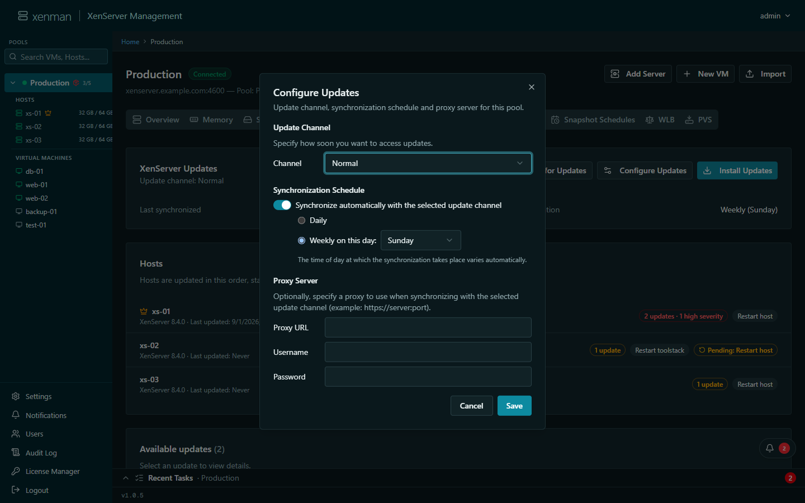

Update hosts and XenMan
This article describes how to update the XenServer hosts of a pool and how to keep XenMan itself up to date.
Update XenServer hosts
XenMan updates the hosts of a pool one at a time. Before a host is updated, its VMs are moved to other hosts. Afterwards they are moved back. Workload Balancing is paused during the update. Only administrators can install updates.
To install updates:
- Select the pool, then the Updates tab.
- Select Check for Updates to synchronize with the update channel.
- Select Install Updates, review the plan and start it.
The progress appears in the tab and in Recent Tasks. When the update finishes, or when it needs an administrator, XenMan sends an email if mail is configured.
Note: On a pool with one host, VMs cannot be moved away. Turn on Shut down running VMs and start them again after the update in the dialog. VMs that do not shut down within 10 minutes are forced off.
Configure updates
To set the update channel and synchronization for a pool:
- Select the pool, then the Updates tab.
- Select Configure Updates.
- Select the update channel: Normal or Early Access.
- Optionally, turn on automatic synchronization, daily or weekly on a chosen day.
- Optionally, enter a proxy server for the synchronization, then select Save.


Update the XenMan appliance
XenMan releases are published as signed update packages (.xenup). The appliance verifies the signature before it installs a package.
To update the appliance:
- Download
xenman-v<version>.xenupfrom the latest release. - In XenMan, go to Settings > Appliance and select Upload update package.
- Select the file and confirm the installation. XenMan restarts and reconnects your browser.
Debian security updates are installed automatically in a maintenance window that you set under Settings > Appliance.
Update the Docker container
Pull the new image and recreate the container:docker compose pull && docker compose up -d